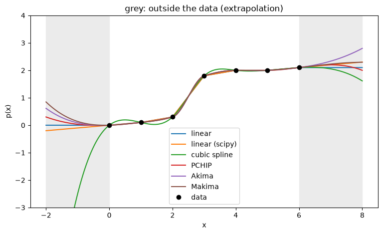
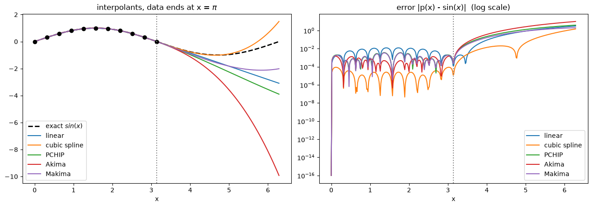
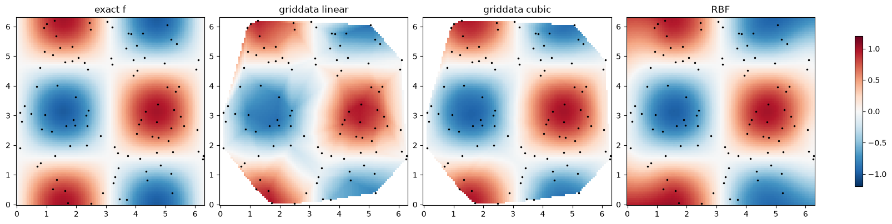

Extrapolation (1-D) and scattered data (2-D) with scipy.interpolate#
Interpolation evaluates \(p\) between the data points. Extrapolation evaluates it outside the data, to the left of \(x_0\) or to the right of \(x_n\). There is no data there, so each method simply continues the formula it uses at the end of the data. The result depends only on the method, not on the true function.
This notebook has two parts:
A. Extrapolation in 1-D with the five methods from class:
method |
call |
extrapolates by default? |
|---|---|---|
linear |
|
yes, continues the last line |
linear (NumPy) |
|
no, holds the end value constant |
cubic spline |
|
yes, continues the last cubic |
PCHIP |
|
yes, continues the last cubic |
Akima |
|
no, returns |
Makima |
|
no, returns |
B. Scattered data in 2-D with griddata and RBFInterpolator. Here the “outside” is everything beyond the triangles between the data points.
Extrapolation is never as reliable as interpolation. A method that is safe inside the data (PCHIP: no overshoot) can still produce nonsense outside it.
The error grows quickly with the distance from the last data point. Only extrapolate a short distance, and only if you have a reason to trust the trend.
import numpy as np
import matplotlib.pyplot as plt
import scipy.interpolate as si
---------------------------------------------------------------------------
ModuleNotFoundError Traceback (most recent call last)
Cell In[1], line 3
1 import numpy as np
2 import matplotlib.pyplot as plt
----> 3 import scipy.interpolate as si
ModuleNotFoundError: No module named 'scipy'
Part A. Extrapolation in 1-D#
Example 1: the running example, extended beyond the data#
The seven heights \(h = (0, 0.1, 0.3, 1.8, 2.0, 2.0, 2.1)\) at \(x = 0, 1, \dots, 6\). We build the five interpolants and evaluate them on \([-2, 8]\), two units beyond the data on each side.
Akima and Makima need extrapolate=True, otherwise they return nan outside \([0, 6]\).
x = np.arange(7.)
h = np.array([0, 0.1, 0.3, 1.8, 2.0, 2.0, 2.1])
names = ["linear", "linear (scipy)", "cubic spline", "PCHIP", "Akima", "Makima"]
methods = [lambda z: np.interp(z, x, h),
si.make_interp_spline(x, h, k=1),
si.CubicSpline(x, h),
si.PchipInterpolator(x, h),
si.Akima1DInterpolator(x, h, extrapolate=True),
si.Akima1DInterpolator(x, h, method="makima", extrapolate=True)]
xnew = np.linspace(-2, 8, 401)
fig, ax = plt.subplots(figsize=(9, 5))
ax.axvspan(-2, 0, color="0.92"); ax.axvspan(6, 8, color="0.92") # extrapolation zones
for name, p in zip(names, methods):
ax.plot(xnew, p(xnew), label=name)
ax.plot(x, h, "ko", label="data")
ax.set_ylim(-3, 4)
ax.set_xlabel("x"); ax.set_ylabel("p(x)")
ax.set_title("grey: outside the data (extrapolation)")
ax.legend()
plt.show()

The values at a few points outside the data:
xe = np.array([-2, -1, -0.5, 6.5, 7, 8])
print(f"{'x':>14s}" + "".join(f"{v:8.1f}" for v in xe))
for name, p in zip(names, methods):
print(f"{name:>14s}" + "".join(f"{v:8.3f}" for v in p(xe)))
print(f"{'np.interp':>14s}" + "".join(f"{v:8.3f}" for v in np.interp(xe, x, h)))
x -2.0 -1.0 -0.5 6.5 7.0 8.0
linear 0.000 0.000 0.000 2.100 2.100 2.100
linear (scipy) -0.200 -0.100 -0.050 2.150 2.200 2.300
cubic spline -9.886 -2.496 -0.793 2.110 2.054 1.614
PCHIP 0.300 0.033 -0.006 2.169 2.200 2.000
Akima 0.614 0.086 0.004 2.194 2.333 2.800
Makima 0.847 0.137 0.018 2.167 2.229 2.295
np.interp 0.000 0.000 0.000 2.100 2.100 2.100
Inside \([0, 6]\) all methods agree well. Outside they go in different directions: at \(x = -2\) the values range from about \(-9.9\) (cubic spline) to \(+0.8\) (Makima).
Cubic spline is the worst: its last cubic has a large curvature, so it shoots off quickly.
PCHIP never overshoots inside the data, but outside it just continues a cubic; it is not monotone there either (on the right it rises to 2.2 at \(x=7\) and falls back to 2.0 at \(x=8\)).
Linear continues the last straight line: simple and predictable, but it can still go negative (here \(-0.2\) at \(x=-2\)).
np.interpdoes not extrapolate at all: it repeats the end value.
Akima and Makima return nan by default#
print("Akima, default :", si.Akima1DInterpolator(x, h)([-1, 7]))
print("Akima, extrapolate :", si.Akima1DInterpolator(x, h, extrapolate=True)([-1, 7]))
print("CubicSpline, extrapolate=False:", si.CubicSpline(x, h, extrapolate=False)([-1, 7]))
Akima, default : [nan nan]
Akima, extrapolate : [0.08571429 2.33333333]
CubicSpline, extrapolate=False: [nan nan]
nanis a safe default: you notice immediately that you left the data.Every method in the table accepts
extrapolate=True/False(exceptmake_interp_spline, where the option isextrapolatewhen you evaluate:p(xnew, extrapolate=False)).
Example 2: how fast does the extrapolation error grow?#
Sample \(f(x) = \sin x\) at 11 equally spaced points on \([0, \pi]\) and evaluate on \([0, 1.5\pi]\). Inside the data all methods are accurate; we look at what happens beyond \(x = \pi\).
xs = np.linspace(0, np.pi, 11)
ys = np.sin(xs)
names = ["linear", "cubic spline", "PCHIP", "Akima", "Makima"]
ps = [si.make_interp_spline(xs, ys, k=1),
si.CubicSpline(xs, ys),
si.PchipInterpolator(xs, ys),
si.Akima1DInterpolator(xs, ys, extrapolate=True),
si.Akima1DInterpolator(xs, ys, method="makima", extrapolate=True)]
xf = np.linspace(0, 2.*np.pi, 400)
fig, axs = plt.subplots(1, 2, figsize=(13, 4.5), constrained_layout=True)
axs[0].plot(xf, np.sin(xf), "k--", lw=2, label=r"exact $sin(x)$")
for name, p in zip(names, ps):
axs[0].plot(xf, p(xf), label=name)
axs[1].semilogy(xf, np.abs(p(xf) - np.sin(xf)) + 1e-16, label=name)
axs[0].plot(xs, ys, "ko")
for ax in axs:
ax.axvline(np.pi, color="0.5", ls=":")
ax.set_xlabel("x"); ax.legend()
axs[0].set_title(r"interpolants, data ends at x = $\pi$")
axs[1].set_title(r"error |p(x) - $\sin(x)$| (log scale)")
plt.show()
print(f"{'distance past π':>16s}" + "".join(f"{n:>14s}" for n in names))
for d in [0.1, 0.5, 1.0, 1.5]:
xp = np.pi + d
print(f"{d:16.1f}" + "".join(f"{abs(p(xp) - np.sin(xp)):14.2e}" for p in ps))

distance past π linear cubic spline PCHIP Akima Makima
0.1 1.47e-03 2.75e-04 4.77e-03 5.50e-03 4.02e-03
0.5 1.24e-02 4.71e-03 6.97e-02 1.06e-01 5.39e-02
1.0 1.42e-01 1.71e-02 3.11e-01 5.43e-01 2.26e-01
1.5 4.78e-01 1.16e-02 7.92e-01 1.51e+00 5.48e-01
Inside \([0, \pi]\) the errors are tiny. Just past \(\pi\) they jump up by orders of magnitude for every method.
Here the cubic spline is by far the best extrapolator (error about \(0.01\) even at \(d = 1.5\)): \(\sin x\) is smooth, and the spline’s last cubic has the right curvature. PCHIP, Akima and Makima flatten their end slopes, so they miss the turn of the sine and are off by \(0.5\) to \(1.5\) at \(d = 1.5\).
Compare with Example 1, where the cubic spline was the worst. Which method extrapolates best depends entirely on the data; there is no safe choice.
Rule of thumb: extrapolate at most a small fraction of the data spacing, and always plot the result.
Part B. Scattered data in 2-D#
Now the data are at 100 random points in \([0, 2\pi]^2\), from \(f(x, y) = \sin x \cos y\).
There is no grid, so RegularGridInterpolator cannot be used. We use griddata and RBFInterpolator.
method |
call |
continuous |
local? |
overshoot? |
outside the data |
|---|---|---|---|---|---|
linear (on triangles) |
|
\(p\) |
yes |
never |
|
cubic (Clough–Tocher) |
|
\(p\) and first derivatives |
yes |
can overshoot |
|
radial basis functions |
|
smooth |
no |
can overshoot |
extrapolates |
si.griddata(pts, z, (Xn, Yn), method=...)builds and evaluates in one call.ptshas shape(N, 2), one row \((x_k, y_k)\) per point.griddatasplits the plane into triangles between the data points. Outside the triangles (the convex hull of the points) it returnsnan, or the value given byfill_value=....si.RBFInterpolator(pts, z)builds one smooth function from all points; it is evaluated at points of shape(M, 2). To evaluate on a mesh, flatten the mesh into points and reshape the result back. It is defined everywhere, so it extrapolates outside the data.
More details: https://docs.scipy.org/doc/scipy/tutorial/interpolate/ND_unstructured.html
Example 3: scattered samples of \(\sin x \cos y\)#
def f(x, y):
return np.sin(x) * np.cos(y)
rng = np.random.default_rng(1) # fixed seed: same "random" points every run
pts = rng.uniform(0, 2*np.pi, size=(100, 2))
z = f(pts[:, 0], pts[:, 1])
xnew4 = np.linspace(0, 2*np.pi, 101)
Xn4, Yn4 = np.meshgrid(xnew4, xnew4, indexing="ij")
V_lin = si.griddata(pts, z, (Xn4, Yn4), method="linear")
V_cub = si.griddata(pts, z, (Xn4, Yn4), method="cubic")
rbf = si.RBFInterpolator(pts, z)
V_rbf = rbf(np.column_stack([Xn4.ravel(), Yn4.ravel()])).reshape(Xn4.shape)
fig, axs = plt.subplots(1, 4, figsize=(16, 3.8), constrained_layout=True)
panels = [("exact f", f(Xn4, Yn4)), ("griddata linear", V_lin),
("griddata cubic", V_cub), ("RBF", V_rbf)]
for ax, (title, V) in zip(axs, panels):
im = ax.pcolormesh(Xn4, Yn4, V, shading="auto", cmap="RdBu_r", vmin=-1.2, vmax=1.2)
ax.plot(pts[:, 0], pts[:, 1], "k.", ms=3)
ax.set_title(title); ax.set_aspect("equal")
fig.colorbar(im, ax=axs, shrink=0.8)
plt.show()

The white areas in the griddata pictures are nan: those points lie outside the triangles, so griddata refuses to answer. RBF fills the whole square.
To compare the methods fairly we measure the error only where griddata gives a value. With scattered points the maximum error is dominated by a few long, thin triangles near the edge, so we also print the root-mean-square (RMS) error, a typical error over the mesh.
F = f(Xn4, Yn4)
inside = ~np.isnan(V_lin) # True where griddata has a value
print(f"points outside the triangles: {100 * (~inside).mean():.1f} %\n")
print(f"{'method':16s} {'max err':>9s} {'RMS err':>9s} (inside only)")
for name, V in [("griddata linear", V_lin), ("griddata cubic", V_cub), ("RBF", V_rbf)]:
e = np.abs(V - F)[inside]
print(f"{name:16s} {e.max():9.3f} {np.sqrt(np.mean(e**2)):9.3f}")
e_out = np.abs(V_rbf - F)[~inside]
print(f"\nRBF outside the triangles: max err = {e_out.max():.3f}")
points outside the triangles: 19.6 %
method max err RMS err (inside only)
griddata linear 0.414 0.078
griddata cubic 0.146 0.017
RBF 0.168 0.018
RBF outside the triangles: max err = 0.930
griddatagives no answer near the corners and edges of the square. Usefill_value=...to choose what is returned there instead ofnan.Cubic and RBF are about equally accurate inside, and both are much better than linear (RMS error about 4 times smaller).
RBF does answer outside the data, but there it is extrapolating. Its error there is several times larger than inside: just as in 1-D, be careful trusting values far from any data point.
Exercises#
Syntax: 1-D methods, data x (increasing) and y:
method |
build |
evaluate |
extrapolate? |
|---|---|---|---|
linear |
|
|
yes ( |
linear, constant ends |
(none) |
|
holds end values |
cubic spline |
|
|
yes |
PCHIP |
|
|
yes |
Akima |
|
|
only with |
Makima |
|
|
only with |
Syntax: scattered 2-D data, pts of shape (N, 2) and z of shape (N,):
method |
build |
evaluate on a mesh |
|---|---|---|
linear |
(none) |
|
cubic |
(none) |
|
RBF |
|
|
useful extra |
call |
|---|---|
\(n\) equally spaced points on \([a, b]\) |
|
a mesh from two vectors |
|
evaluate at a few single points (2-D) |
|
value instead of |
|
smallest and largest value (ignoring |
|
maximum error against a known \(f\) |
|
shade the extrapolation zone in a plot |
|
plotting |
call |
|---|---|
a row of |
|
colour plot of a surface |
|
same colour scale on all plots |
|
colour bar |
|
plot the data points |
|
equal scale on both axes |
|
Exercise 1 (1-D interpolation and extrapolation). A cup of coffee cools in a room. Its temperature in centigrade is measured at these times (minutes):
t = np.array([0, 2, 5, 10, 15, 20, 30.])
T = np.array([90.0, 81.0, 69.4, 51.2, 41.0, 34.8, 26.5])
(a) Build the five interpolants (linear, cubic spline, PCHIP, Akima, Makima). Plot them on \([0, 30]\) (use tn = np.linspace(0,30, 50)) together with the data. Print the five estimates of the temperature at \(t = 7\) and \(t = 25\) minutes.
(b) Now extrapolate: evaluate all five on \([0, 60]\) (use tn = np.linspace(0,60, 100)) and plot them, with the extrapolation zone \([30, 60]\) shaded. Print the five predictions at \(t = 35\), \(45\) and \(60\) minutes.
(c) The cooling follows (approximately) Newton’s law, \(T(t) = 20 + 70\,e^{-0.08\,t}\). Print the error of each prediction from (b). Which method does best a short distance past the data, and which far from it? Which methods give a physically impossible answer (a temperature below the room temperature of 20 °C, or a coffee that warms up again)?
# Exercise 1
t = np.array([0, 2, 5, 10, 15, 20, 30.])
T = np.array([90.0, 81.0, 69.4, 51.2, 41.0, 34.8, 26.5])
Exercise 2 (2-D scattered data). Twelve weather stations in a \(100 \times 100\) km region measure the temperature (°C). Station 12 is on a mountain top.
sx = np.array([10, 30, 55, 80, 15, 40, 65, 85, 20, 50, 75, 45.]) # km east
sy = np.array([15, 10, 20, 15, 45, 40, 50, 45, 80, 75, 85, 60.]) # km north
T = np.array([14.2, 15.1, 13.8, 12.9, 11.5, 9.8, 6.2, 11.8, 10.4, 8.9, 10.1, 3.5])
pts = np.column_stack([sx, sy])
(a) Make a temperature map on a mesh of \(201 \times 201\) points over \([0, 100]^2\) with griddata (linear and cubic) and with RBFInterpolator. Plot the three maps with the stations marked.
(b) Print the smallest and largest temperature of each map (np.nanmin, np.nanmax). The measurements are between 3.5 and 15.1 °C. Which methods go outside this range?
# Exercise 2
sx = np.array([10, 30, 55, 80, 15, 40, 65, 85, 20, 50, 75, 45.]) # km east
sy = np.array([15, 10, 20, 15, 45, 40, 50, 45, 80, 75, 85, 60.]) # km north
T = np.array([14.2, 15.1, 13.8, 12.9, 11.5, 9.8, 6.2, 11.8, 10.4, 8.9, 10.1, 3.5])
pts = np.column_stack([sx, sy])